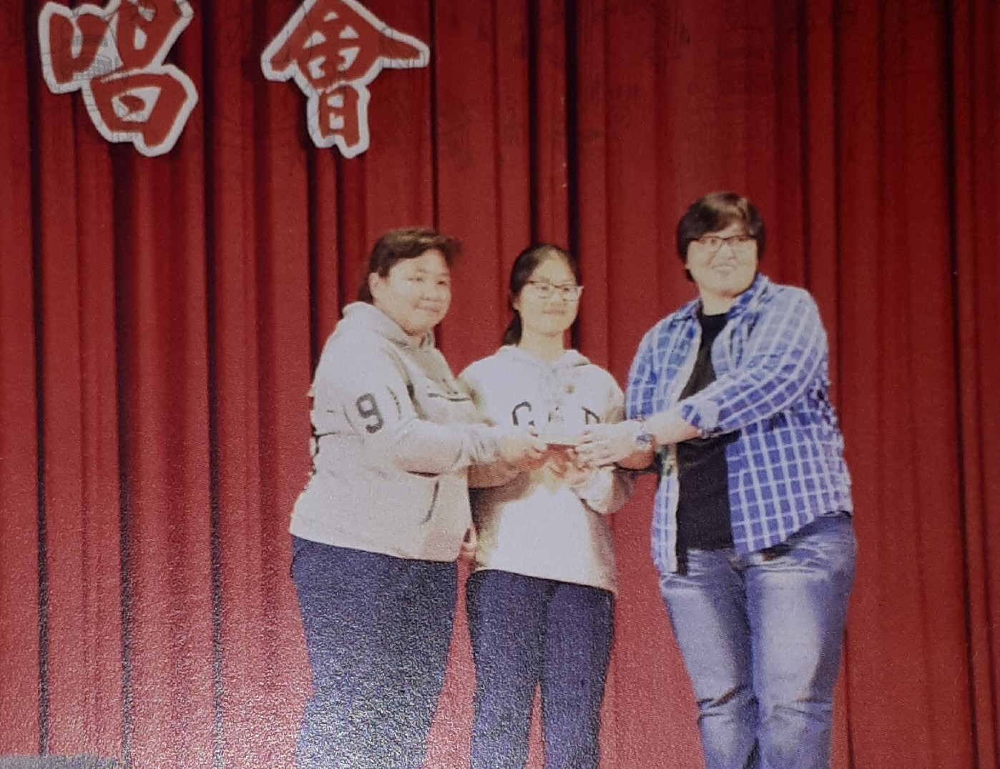
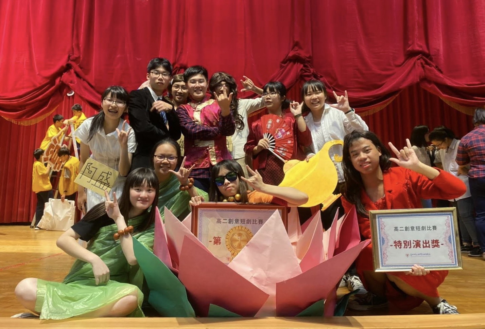
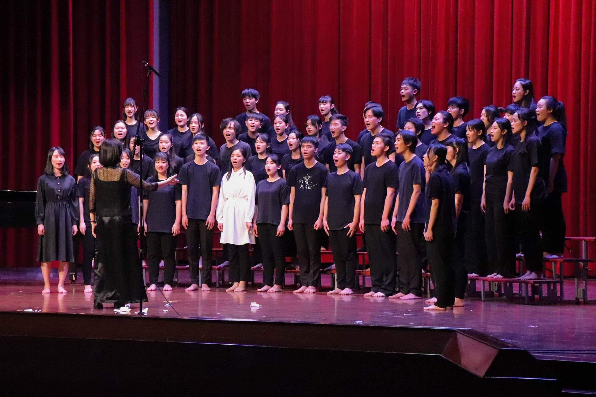
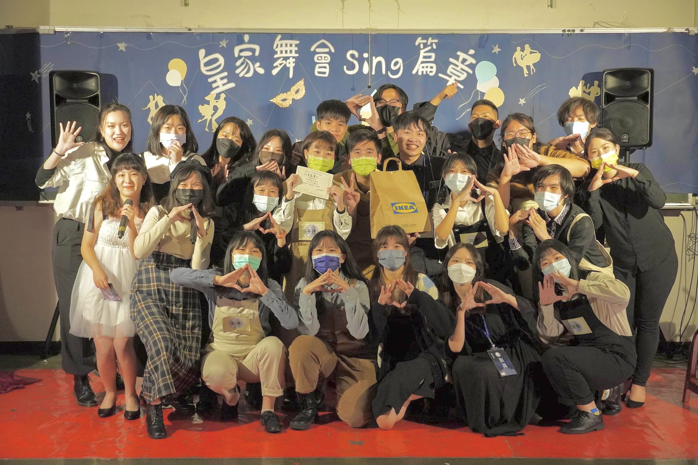

成長背景與個人特質
我是陳昱璇，大家可以叫我欸達，因為我的英文名字是ada。西元2003年07月06號出生，是個不折不扣的巨蟹座，慢熟但其實很熱情的na～(?，相處久了就會變一個人。我的老家在民風淳樸的雲林莿桐，小時候放學，很喜歡跟阿公去巡田，看看田邊的小溪。順便把熟成的農作摘回家，晚上就能變出一鍋好菜！在莿桐真的充分體會何謂守望相助，只要隔壁的伯公、阿婆有甚麼困難，只要說一聲，我們一定在所不辭的相助，做了好吃的食物也會互相分送，在太陽下山之前和阿公阿嬤跟隔壁阿婆閒聊，聽他們分享八卦，相對地自己的八卦很快地會傳遍(咩噗，但沒關係，畢竟附近的阿公阿婆都是自己的家人ﾟ(ﾟ´ω`ﾟ)ﾟ。小學六年級後，隨著媽媽離開雲林來到大甲，一個人生地不熟的地方，媽媽也不能時時刻刻照顧我，那是我個性變得堅韌獨立的時機。來到都市(雖然大甲應該也是算鄉下，但比莿桐還都市化了)生活了超過我目前生活的一半了，有更多的資源可以獲得，在這裡雖然感受不到在莿桐的感覺，多了塵世的喧囂，人與人的連結也不那麼緊密，多半是點頭之交，但在這也遇見了可以走一輩子的好知己，所以現在看來，我並不後悔離開，但我也不會忘記在莿桐的童年回憶，想念家人時也可以回家看看他們，到家旁邊的空地看沒有高樓遮擋住的天空，跟田邊的阿伯泡茶聊天，跟阿嬤一起剝剛採回來的蒜頭，早上起床吃阿嬤煮的粥配肉鬆跟我最愛的古早味，也可以騎腳踏車去村子看好久不見的狗狗貓貓們，想到這個就好幸福。
興趣與專長

唱歌
好聽的就唱，喜歡節奏偏中快的歌曲， 最近有在接觸
.jpg)
聽歌
西洋(好喜歡ARI、韓文、日文，阿卡，很少聽中文歌)，不分國家的話，最常聽POP 、r&B曲風

運動
打羽球、排球、保齡球、撞球(後面兩個都超菜的那種，另外，極其討厭跑步跟籃球

追劇
偏好韓劇、美劇，其實劇的部分沒什麼限制，主要是看感覺(講了跟沒講一樣)，動漫的部分只有看少少幾部：排少、巨人、咒迴、齊木…其他我覺得還好的就不一一打出乃了
打手遊
yo我是傳說屁孩(打的爛但是不會亂噴，絕對是最友善的那種∠( ᐛ 」∠)
沙雕、迷因
喜歡講幹話、迷因、梗圖，歡迎來交流交流嘿嘿
學習歷程
升上高中後，利用成績申請進入語文資優班，不僅讀書風氣比國中時期良好許多，老師們也相當注重學生品行，俗話說:「近朱者赤，近墨者黑。」不管是學業成績還是特殊表現方面，在良好的學習環境中，使我的態度更加積極上進。除了讀書風氣，我們也很注重生活紀律(其實是因為老師很嚴格)，三年來每個學期的生活榮譽競賽都是由我們拿下第一名，在這項比賽中我了解到，即使份內的工作只有一小部分也要不可以馬馬虎虎，因為這不僅僅是對自己負責，更是為班級努力爭取榮譽。運動會參加運動會背身夾球趣味競賽，榮獲第二名。不管是體育課還是放學後，我和拍檔都願意留下來練習，原本為了就是為班級爭取榮譽，有第二名的成績絕不是我們幸運。 因應閱讀能力的重要性，於高一下投稿的閱讀心得分別獲得了全國高級等學校閱讀心得比賽甲等及校內比賽特優，於高三上的則獲得優等的成績。 在高一上參加國語文閩南語朗讀競賽表現優異，高二下英文演講比賽佳作。在這兩場比賽中我都踏出了我的舒適圈，尤其是英文演講比賽，對於英文不慎自信的我，有佳作的成績是靠著不斷的練習才獲得的。
高一上學期末，我與學姊組隊參加了對我意義重大的比賽―荷塘歲末演唱會。在那次比賽中，我和學姊兩人演唱了Ariana Grande – thinking bout you一起拿下第三名。而在比賽前，我們偶有意見不合和挫折，但透過溝通及努力練習來讓整場表演呈現我們最好的一面，雖說這是一個與學業相關甚少的校內比賽，但卻讓我學到我在學校課本中學不到的事情：耐心、團隊合作精神及我最需要的膽量訓練。
二年級上學期，我們班參加話劇比賽榮獲第一名，在其中我擔任導演、編劇以及主演。在這亮眼的成績背後，除了不斷的與同學們溝通磨合及努力排練，更需要積極的態度。儘管舞台的呈現方式、角色的情緒表達，透過好幾次的排練進行修正，但演出當下扔免不了突發狀況，而這卻也激發我的危機處理能力，製造意想不到的「笑」果。話劇比賽讓我深刻的體會到合作的意義，不可能事事順心，必須要雙方各退一步的溝通磨合，才能製造雙贏的局面。  高二的話劇比賽：囂張沒落魄的久。描述老富婆為了錢財勢力而欺壓年輕的小狗子，而在最後因為小狗子得到嘟嚕嚕佛陀的眷顧，一切的真相大白，讓老富婆身敗名裂。
校內校外活動參與●培養團隊合作默契
校內社團：
在高一上擔任了仁愛康輔社的社員，參加迎新及其他友社的社慶，在這個社團裡認識了很多新朋友，我的社交能力有大幅進步!  高一下則轉社至卡拉OK社。 二年級確立了志向後進入大眾傳播社，在這裡認識了許多志同道合的好友，在出公差時也學習了諸多與傳播系相關的知識，在社內提供許多實際操作的機會，在大眾傳播社我感到相當滿足。
高一下則轉社至卡拉OK社。 二年級確立了志向後進入大眾傳播社，在這裡認識了許多志同道合的好友，在出公差時也學習了諸多與傳播系相關的知識，在社內提供許多實際操作的機會，在大眾傳播社我感到相當滿足。
校內外活動：
身為半個大甲人也知道媽祖是大甲的在地信仰，每年三月媽祖出巡都熱鬧無比，但卻沒親身體驗過繞境，這次非常幸運甲中有「媽祖行腳」的活動可以開開眼界，其中讓我最印象深刻的是信徒們的熱情相待。這一路上，許多的點心販都免費提供食物給辛苦的進香團，還有幫我們加油打氣的鄉親們，也聽了很多神奇的故事，原本筋疲力盡的我們感受到那一絲溫暖，彷彿又有動力走到終點。
靜宜youtuber夢工廠營隊：
一年級寒假至靜宜大學參家寒假營隊，短短一天的行程，體驗配音員的工作、一起討論劇本編排，除了讓我對大眾傳播的概念更加了解，也增進我團隊合作的能力。
世新媒體先鋒營：
高一暑假時，參加為期五天的世新媒體先鋒營，從中吸收了許多與影視相關的知識與前輩的經驗，並且訓練自身的社交能力，認識許多來自各地的好友。
畢聯會攝影組
在高三下學期，我擔任畢聯會攝影組一員，負責發想劇本、剪輯、攝影。與一群志同道合的朋友在這裡充分發揮我們的興趣，意見不合的時候，我們會經過溝通及討論並選擇對團隊最好的方法。
其他：
同時我也接了人生第一份打工，其中我擔任活動促銷工讀生，必須直接跟陌生人介紹方案內容，拉攏客人，相當考驗臨場能力，對於平常不擅長言詞的我來說，這是一份很有挑戰的工作，雖然有過些小挫折，但從中可以訓練話術技巧，也可以讓腦袋的思路更靈活，當時跟我的好閨蜜一起工作，沒客人的時候，我們會一起聊八卦，講幹話、分享所有事情，甚至改編歌詞靠北上司跟客人，超好笑，每次工作都覺得時間過得很快。
大學社團活動:合唱團
加入合唱團的契機
大一上，加入世新大學合唱團，這是從還未上大學的決定，從國小、國中有參加合唱團，但到了高中卻沒有合唱團，讓我倍感失望，所以上大學為了填補高中的遺憾，還有我從小都沒有學過樂器，想加強自己的樂理能力，想要讓自己看到樂譜就可以自信的唱出來，所以大學社團我毫不猶豫地填了合唱團，實際加入，的確看音符從一格一格數變成可以很快地寫譜！還另外發現其實裡面的人都很熱情、友善，瘋瘋的，跟我想像嚴肅的練唱畫面不太一樣。進來合唱團另一個原因，是希望大學時期，能讓自己有一個可以大聲唱歌的時間及空間，生怕自己大學四年會忘記唱歌的感覺，忘記和聲打入腦中那種酥麻到起雞皮疙瘩的感覺。
期末公演：拂曉而聲
2021/12/29,公演也算是合唱團的成發，為了帶給觀眾們最棒的聽覺及是視覺饗宴，每個社員都很認真地參與這次的公演，也因為疫情的關係，上次的公演沒辦成留下了遺憾，所以學長姐們特別珍惜這次得來不易的機會，看到他們這麼積極，心裡多少有些感動，雖然這次公演歷經長達半個多月的加練期及三次彩排，最繁雜的前置作業，但當謝幕鞠躬那一刻想的不是終於結束了，是：很開心你們你們來看我們表演。還記得加練期最讓我頭痛的是：因為期末作業還沒做完，有一首歌譜沒有很熟，公演那天瘋狂對嘴，超好笑，唱的好心虛。
期中活動：小合唱
這是一個將合唱團拆成四個小隊，變成互相競爭的社內比賽，我們隊輔選的英文個歌爆乾難，好多個切分音，半音升調什麼的而且歌詞都不一樣超難背，反正學到差點沒讓隊輔爆氣，因為我們唱得太爛了哈哈哈哈。結果表演當天我們很順利，狀況也很好，意料之外地拿下最佳小隊！另外，這次的小合唱我報名了獨唱組，我真的不知道我當時哪來的勇氣在這麼多人唱我女神ari的歌，可能對太有自信吧哈哈，一直習慣讓自己的聲音混入人群中，獨唱是我跨不太過去的坎，我還記得站在台上雙手抖個不停，後面左右兩個音響轟炸耳朵，非常清楚地聽到自己的聲音，太害羞了吧...反正中間還是有發生小車禍，希望可以習慣自己的聲音和表演的感覺，並喜歡它們。
進入斑馬線
一開始在招生試音看到斑馬線人聲樂團的表演，對阿卡貝拉沒什麼概念，單純覺得應該是個蠻厲害的玩意兒，每個人唱不同聲部，說算獨唱但又不算是，覺得可以給自己另一個挑戰，所以心生意念去報考看看。還記得當時考試，站在學長姐前面，雙手發抖的唱完指定曲，自選曲還瘋狂趕拍，考完走出去第一刻想的是：絕對不會上థ౪థ，畢竟歌詞沒背熟，當天狀態很差，已經是半放棄的狀態了。晚上考試結果出來，原本不想看，但我就是犯賤，想著會不會有種不可能的可能，但是在看到我的名字在螢幕—ATLO：陳昱璇，一直在心裡問自己這不是在作夢吧…沒錯，現在我是斑馬線人聲樂團的小馬ATLO陳昱璇！
右圖我們20屆是第一場表演，剛好碰上盛大的20周年紀念—斑馬20 再唱一世紀，所以非常得剛好第一次表演就站上那麼大的舞台…為了這次表演，第一次體驗了夜練，付出了許多時間與夥伴們互相磨合，表演當天沒有出什麼差錯，觀眾們也都很捧場，應該是看我們很菜吧哈哈，但我覺得除了音樂性，我的台風還有相當大成長的空間，希望之後自己能在舞台上表現得更從容，然後很感謝他們付出精神及時間來看表演，謝謝夥伴們那幾個禮拜沒有放棄一起練習，當表演結束聽到給我們的掌聲，似乎那些辛苦都消失不見。斑馬線和小合唱對我來說，都算是踏出同溫層的里程碑，雖然離我想要達成的狀態還有很大的進步空間，雖然路途上有過懷疑、有過害怕，但我很感謝當時選擇接受挑戰的自己，讓我有機會變得更加茁壯。